简介
nodewox 是连接智能设备，并驱动联网设备协调工作的物联网平台。相较于其它物联网平台，nodewox的特点：
柔性连接 / SDN
设备群间连接纵横，各循规则。连接、规则皆可修改，而设备群之行为模式亦随之而变。此之谓 “Software Defined Networks” 也。自治互动 / Automated
设备间按设定规则智能互动，真正实现 m2m可编程 / Programmable
可对设备及其信号进行编程，赋予设备群行为一些“小聪明”。
结论：nodewox = nodes + works。其中 nodes 即是各种设备：或为实体(Thing)，或为逻辑(Logic)；works - 自主互动。
正名
子曰“名正则言顺”。理解nodewox，先了解相关概念术语：
设备 (Thing)
指可接入 nodewox 网络的“东西”。可以是实体设备，如：灯泡、光谱测试仪、继电器、温湿度传感器、生物信号测试仪、光源等；也可是纯软件的虚拟设备，如：Kalman滤波算法，PID控制算法，低通滤波器，数据转换器，FSM有限状态机等。
通道 (Channel)
每个设备有1个以上通道，用于实现具体功能。也可说，每个设备都是若干通道的集合。通道按方向分，有“输出”和“输入”两种。输出通道为数据源(Source)，输入通道为执行器(Actuator)。
举例
安卓手机安装PaaN程序后，可变成nodewox设备。当接入nodewox网络后，可查看到此手机“设备”中包含众多“通道”：接近传感器，陀螺仪传感器，加速度传感器，GPS定位，光强度传感器，电子罗盘，来电事件，拨号，振动，点亮屏幕等（通道多寡，依硬件能力而定，不一而同）。
以上，各传感器类的通道即是“输出通道”；振动/点亮屏幕/拨号等动作类通道即是“输入通道”。
功能群组 (Group)
从各设备中抽取需要的通道，合成一组，谓之曰“群组”。群内各通道间可设定连接、逻辑、规则等，以构成可实现意图（图灵完备）的体系。
举例
有一个PaaN手机设备，一个4通道继电器设备。从手机设备中选择“加速度传感器”，“接近传感器”，“振动”通道；4通道继电器设备中选择“1#开关”，“2#开关”，共5个通道组成一个功能群。
要求此功能群实现以下意图：
- X方向发生大振动（加速度传感器X数值超过15）时，开启1#开关10秒钟；
- 有物体靠近手机（接近传感器数据为0）时，开启2#开关1秒，并振动手机。
连接 (Link)
在功能群中，定义2个通道之间信号传递方式。连接有方向性：从“输出”到“输入”。简单连接，即透传数据；智能连接，可写脚本按条件改变数据。
末了，po 个图以助消化。
注册
进入nodewox物联网，必须先注册账户。
在PC端操作
请用Chrome, Firefox, Edge等现代浏览器(IE不支持)访问 注册页面 。
在此界面中填写一些简单的信息，即可创建一个nodewox.org账户。注册成功后，请登录。
在移动端操作
先在手机上安装nodewox.org管理应用。目前，本app仅适用于 Android 4.4 以上设备。
初试
想尽快看到效果? 先接入一个设备试试。如果手头有 Android 4.2 以上手机或平板，通过PaaN应用，可将它变成一个nodewox入网设备。
安装 PaaN 应用
PaaN (Phone as a Node) 是一个将安卓设备变成nodewox设备的应用，目前只适配 Android 4.2 以上手机或平板。
安民告示
PaaN应用会申请较多权限，但它是一个光明正大的软件，不会窃取任何信息。敬请放心。
PaaN设备入网
第一次运行，PaaN程序检测到本设备尚未在nodewox.org注册，所以进入设备注册界面：
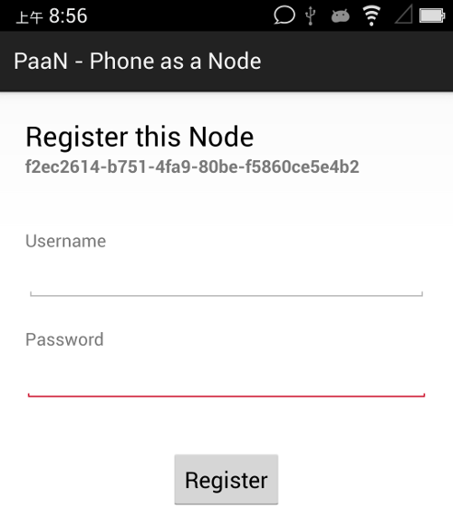
请输入你在nodewox.org的用户名和口令，按Register将本设备注册到该账户名下。设备注册后，出现这个界面：
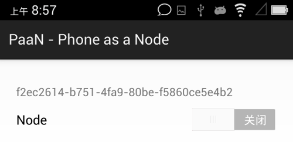
点击开关以接入nodewox.org (接入后，在点击开关可断开)。
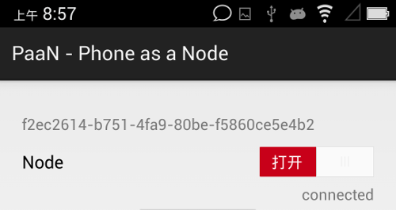
管理物联设备
nodewox.org提供2种管理物联设备的方式
PC端
仅需使用现代浏览器即可(Chrome, Firebox, Edge, not IE)。移动端
请在Android 4.4以上手机安装nodewox.org管理app。
在PC端管理
用浏览器访问 https://www.nodewox.org 并用帐号登入。已注册的设备，可在管理后台查看到。（如设备未及时出现，请点击那个原型箭头的刷新设备按钮，或者刷新浏览器）。
点击设备名前的箭头符号，可以展示该设备下属通道（通道多少，依硬件设备而不同）。如果设备及通道为灰色，表示该设备未入网；如是黑色，表示已接入。
当一个设备接入nodewox后，设备列表中该设备及其通道将变成黑色；此设备断开nodewox网络后，其对应颜色变灰。
请按以上描述接入/断开你的PaaN数次，验证下是否如此表现。
在移动端管理
在移动设备上启动nodewox管理应用并登录。
在 我的设备 页显示已注册设备，颜色规则同前述。
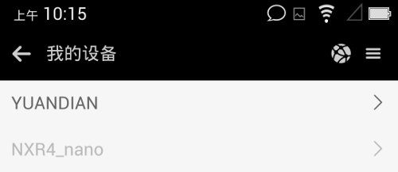
点击某设备，进入设备详细信息，其中显示出该设备下通道。
点击某通道，进入该通道详细信息。
小试牛刀
设备即入网，来做个实验以理解nodewox的能力。
通常，PaaN设备中有靠近传感器，英文名proximity，此传感器可检测物体靠近手机。除了特别节俭的，一般手机都有此传感器，如果不幸你的PaaN没有此传感器，则以下实验做不成了。
比如，我这台手机的proximity，当检测到有东西移入约1.5cm内时，会发出信号0；当物体从1.5cm内移出时，发出信号1。各型号手机的参数不尽相同，但原理类似。
现在让nodewox实现这个功能：当手机检测到有物体进入到1.5cm范围内时，发出振动，并点亮屏幕。
在PC管理端操作
点击设备下proximity通道，进入该通道信息，并点击添加连接按钮
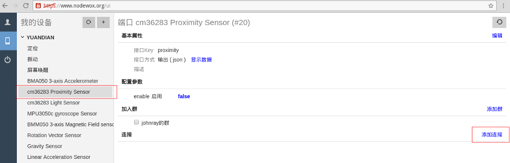
弹出框内列出在同组内，可供连接的候选端口。我们选中振动和唤醒屏幕 2个通道，按下确定
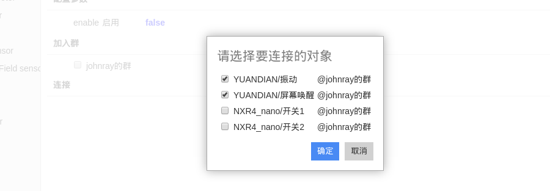
创建连接后，proximity通道信息页面变成这样：
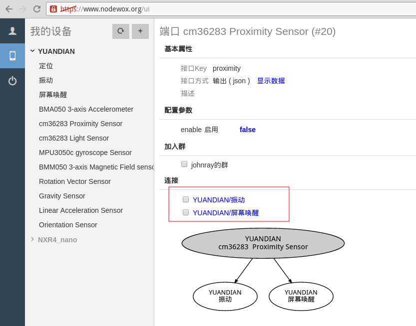
然后，我们需要在连接上写点代码 (python)，以确保仅当检测到靠近信号时才触发 振动 和亮屏，而不是物体离开时。点击连接，打开其代码属性窗口：
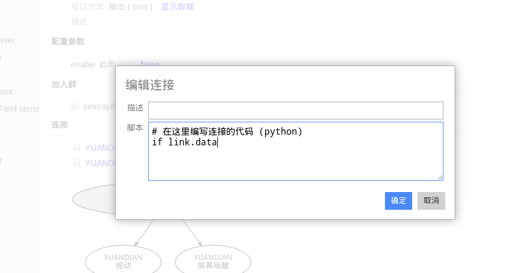
2个连接的代码都是这样的（假设你已具备python编程的知识）:
其中，link代表本连接, link.data为传入本连接的数据（发自源端），语句link.forward() 将数据透传到目的端。
说明：如果连接上无代码设定，则传入数据将透传到目的端。
在移动管理端操作
同样的操作，我们在移动端再做一遍。
先进入proximity通道页，选择菜单上的添加连接：
进入选择连接对象的界面，这里列出了可选的连接端口。我们选中振动和唤醒屏幕，按下确定按钮。
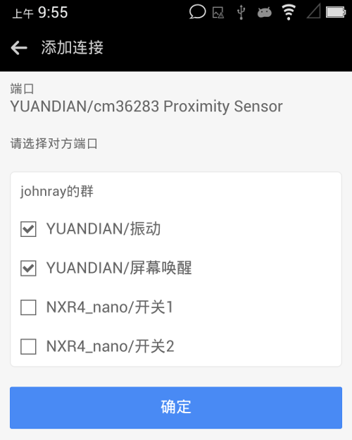
连接已创建，这时的proximity通道页面变成以下图示。此界面中，点击某连接项，可进入该连接的属性界面，进行编写代码。
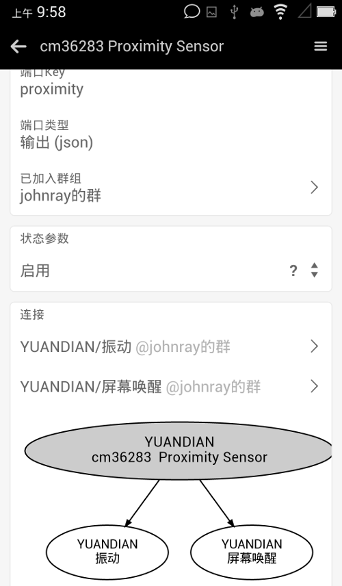
以下是连接的代码编辑界面（注：代码内容请参考以上文字，而不要以图片为准。因为脚本环境可能已升级，而图片未更新）。
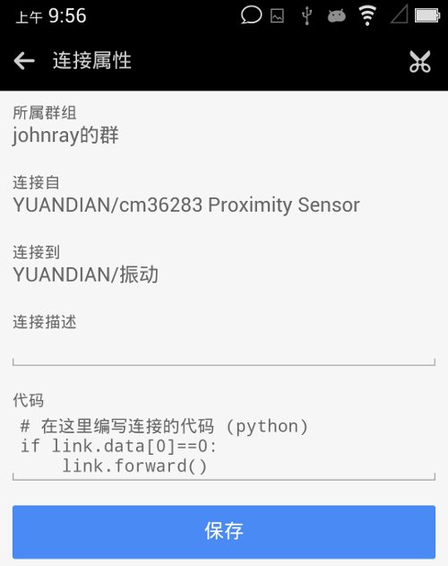
剩余工作，请自行完成。我们已按要求配置好一个nodewox应用，下面让此应用运转起来。
运转起来
因为是测试目的，PaaN中传感器通道默认关闭，需要先打开proximity通道。
一个通道可有若干配置项，而PaaN的传感器通道设计了一个启用/Enable配置。可修改配置项可通过手工方式修改，或通过其它设备自动配置。以下我们用手工方式开启这个通道。
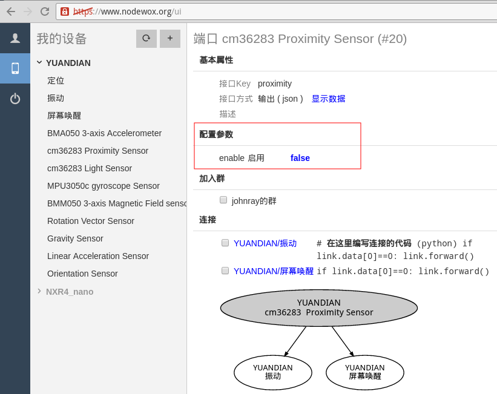
按上图所示，这个通道是关闭的(false)。请点击false，很快，此字样应变成true，表示通道已启用。若点击false后，迟迟未变成true，表示设备或浏览器未接入nodewox网络，请刷新浏览器，重新接入设备，或者检查你的互联网设施。
从PC端开启通道
在移动端修改通道参数的界面如下，请点击开启项目。
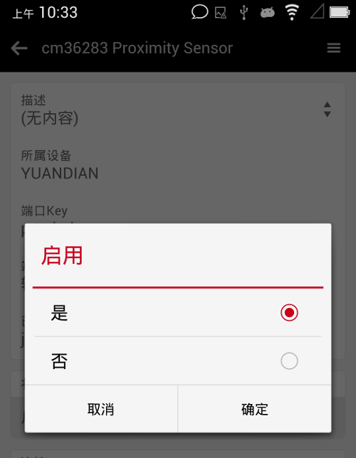
手持PaaN设备，并关闭屏幕，然后另一手靠近接近传感器，看看是否感受到振动？屏幕是否自动点亮？
手机的靠近传感器位置，一般如图所示：
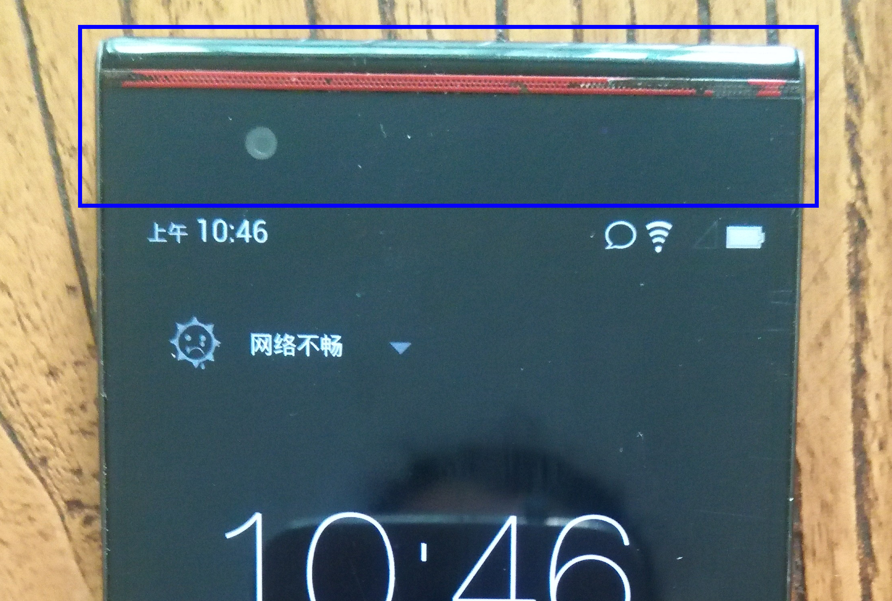
（PS. 我确实遇到过一个恶劣的设备，几年前运营商赠送，质量极其粗糙。实验中一直不能振动，百思不得其解，最后发现它的振动器根本无法使用！厂商名号就不公开了。）
从移动端开启通道
0x04 造物
我们试着用树莓派做一个简单的设备。首先，假设你已能开发树莓派，并具备相应的python技能。
开发一个《网络继电器》，接入nodewox物联网后，可被控制接通/断开电路。这个小东西很简单，但还是有些实际用途的，例如：远程开关电器，定时开关电器，由其它设备控制开启/关闭电器。
安装 nodewox SDK
###